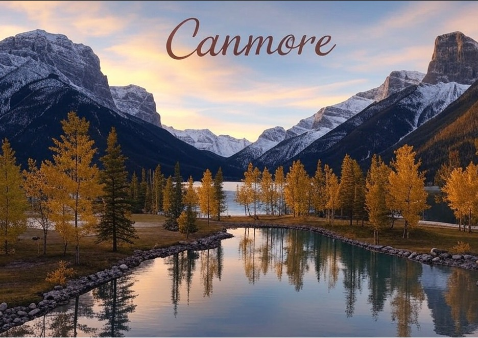
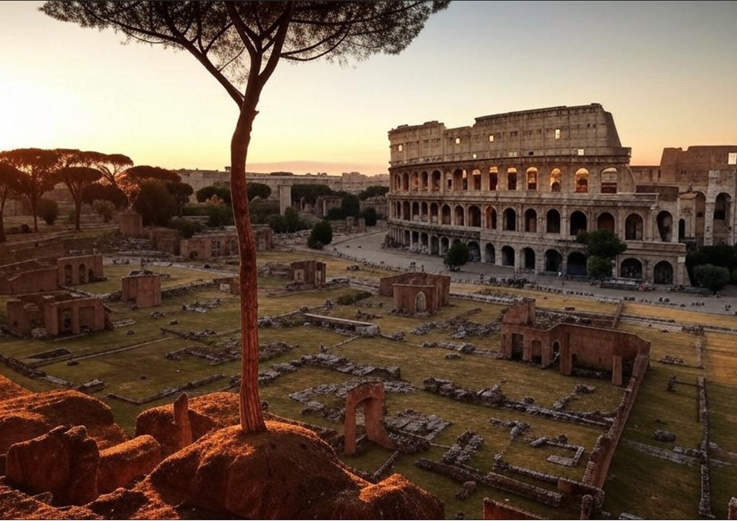
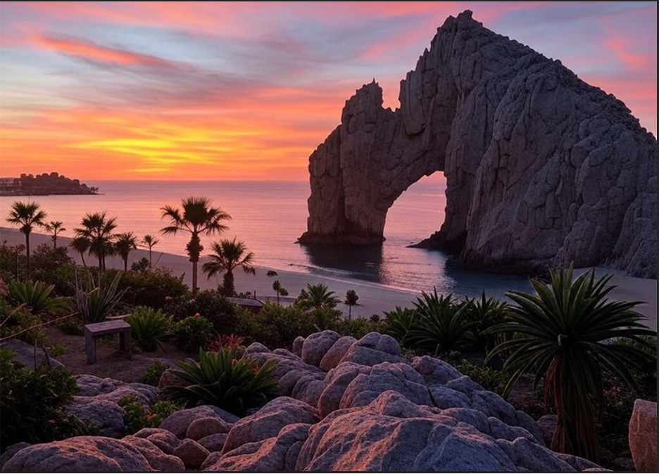

Canmore
Canmore is a nature lover's dream. I love its stunning mountain views, peaceful atmosphere, and the abundance of outdoor activities. Hiking trails like Grassi Lakes are my favorite, offering crystal-clear turquoise lakes surrounded by breathtaking cliffs. Canmore’s vibrant local culture is also a big draw, with charming art galleries, cozy coffee shops, and a strong sense of community. Whether it’s a summer hike or a snowy winter walk, Canmore never fails to feel magical. I also played 4 years of Junior A hockey for the Canmore Eagles. Definently the best 4 years of my life as it taught me to many life lessons and game me friendships that will last a lifetime.
Rome
Rome is a city where history and modernity blend seamlessly, making it one of my favorite destinations. Walking through its ancient streets, I love discovering iconic landmarks like the awe-inspiring Colosseum and the grandeur of St. Peter's Basilica. The vibrant energy of the city, paired with its incredible food, adds to its charm, especially when enjoying authentic Italian gelato by the Trevi Fountain. For first-time visitors, planning is essential—book tickets to popular attractions like the Vatican and the Pantheon in advance to avoid long lines. Wear comfortable shoes, as walking is the best way to explore, and carry a reusable water bottle to refill at Rome's public fountains, known as “nasoni.” Exploring major sites in the early morning or evening offers a magical, less crowded experience, and trying traditional Roman dishes like carbonara and cacio e pepe is a must for an authentic taste of the city.
Cabo San Lucas
Cabo San Lucas a place where ive been many of times is the ultimate tropical getaway, offering stunning beaches, crystal-clear waters, and a lively atmosphere that caters to relaxation and adventure alike. I love spending time at the iconic Arch of Cabo, where the Pacific Ocean meets the Sea of Cortez, and enjoying activities like snorkeling and whale watching. The vibrant nightlife, with its beachside bars and delicious seafood, adds an extra layer of excitement to the experience. For first-time visitors, it's important to know that the best time to visit is from November to May, avoiding hurricane season. Bring plenty of sunscreen, as the sun is strong, and consider booking excursions in advance, such as boat tours,diving trips, or deep sea fishing which is one of my favorites. Whether you’re lounging on the beach or exploring Cabo’s underwater treasures, there’s something for everyone to enjoy in this sunny paradise.